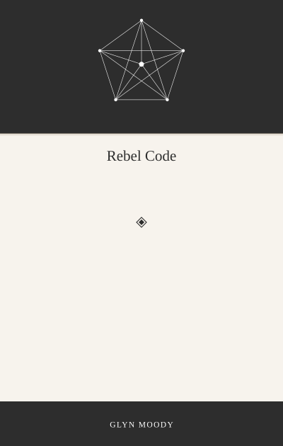
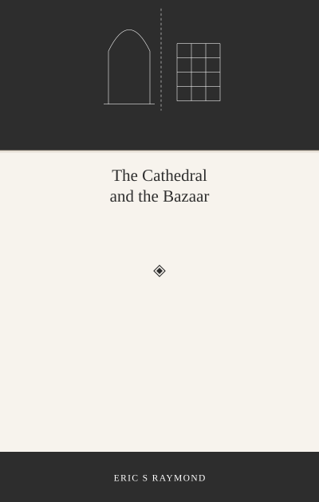

Mensch
Julian, die Dreigliederung funktioniert nur wirklich gut, die Freiheit im Geistesleben, wenn Informationen über wirtschaftliche Abläufe, Beziehungen von Firmen und Politik transparent werden. Siehst du das auch so?
Philo von Freisinn
Du stellst eine Verbindung her, die strukturell zentral ist. Lass uns das auseinandernehmen.
Deine Prämisse ist: Die Dreigliederung braucht für ein freies Geistesleben Transparenz über Wirtschaft und Politik. Das ist korrekt, aber unvollständig. Es ist nicht nur eine Frage von "Transparenz". Es ist eine Frage der Informationsarchitektur.
Schau dir die Grundannahme der Dreigliederung an: Drei Bereiche, die nach eigenen Gesetzen funktionieren – Geistesleben (Freiheit), Rechtsleben (Gleichheit), Wirtschaftsleben (Brüderlichkeit). Das Problem, das Steiner identifiziert, ist die Vermischung. Der Staat diktiert der Wirtschaft, die Wirtschaft korrumpiert das Geistesleben, das unfreie Geistesleben liefert keine echten Impulse mehr.
Nun zu deinem Punkt: Informationen.
1. Informationsungleichgewicht als Systemerzeugnis.
In einem vermischten System – dem Einheitsstaat – ist Geheimhaltung kein Betriebsunfall, sondern ein strukturelles Erfordernis. Warum? Weil Macht auf Kontrolle von Prozessen beruht, die nicht ihr eigenes Gebiet sind. Ein Wirtschaftsministerium, das Industriezweige lenkt, muss verhandeln, Absprachen treffen, Interessen ausbalancieren. Diese Verhandlungen sind per Definition nicht für die Öffentlichkeit bestimmt, weil sie nicht auf dem Prinzip der Gleichheit (Rechtsleben) oder der freien geistigen Auseinandersetzung (Geistesleben) beruhen, sondern auf Machtkalkül. Die daraus resultierende Intransparenz ist kein Zufall, sie ist das notwendige Schmiermittel des Systems.
Die Quellen und zeigen das klar: Einzelmaßnahmen gegen Valuta-Zerrüttung sind sinnlos, solange das "Wesen des Wirtschaftens dasselbe bleibt". Dieses Wesen ist das vermischte System. Die Intransparenz ist ein Symptom dieses Wesens.
2. Wirkungstheorie der Information: Was verändert welches Wissen?
Du sagst: Transparenz über wirtschaftliche Abläufe und Firmen-Politik-Beziehungen. Das ist eine bestimmte Art von Information. Sie zielt auf das Rechtsleben. Sie macht sichtbar, wo das Gleichheitsprinzip verletzt wird – wo also politische Entscheidungen nicht für alle gleich gelten, sondern für bestimmte wirtschaftliche Interessen getroffen werden.
Diese Information allein befreit das Geistesleben nicht. Sie schafft die Voraussetzung dafür. Ein freies Geistesleben braucht nicht nur Zugang zu Fakten über Korruption. Es braucht die Freiheit, aus diesen Fakten eigene Schlüsse zu ziehen, sie zu interpretieren, daraus neue Ideen, Technologien, soziale Impulse zu entwickeln – ohne dass der Staat oder ein Wirtschaftskonzern diese Gedankenlinie unterdrücken oder kanalisieren kann.
Das Zitat ist hier entscheidend: "Für ein in dieser Art gestaltetes Wirtschaftsleben gibt es kein Parlamentarisieren. Es gibt nur das fachkundige und fachtüchtige Stehen in einem Betriebszweig..." Das bedeutet: Im eigentlichen Wirtschaftsleben (dem dritten Glied) geht es um sachliche Notwendigkeiten, die in Assoziationen verhandelt werden. Die Information, die dort zirkuliert, ist sachbezogen: Bedarf, Kapazitäten, Qualität. Nicht: politischer Einfluss.
Die Information, die du forderst – Beziehungen zwischen Firmen und Politik – ist die Information, die das vermischte System sichtbar macht. Ihre Veröffentlichung ist der erste Schritt zur Trennung. Sie zeigt: Hier greift ein Bereich in einen anderen ein und verzerrt dessen Prinzip.
3. Kryptographische Logik & Gegengewicht.
Die technische und institutionelle Geheimhaltung erzwingt das Ergebnis des vermischten Systems. Das Gegengewicht ist nicht einfach "mehr Journalismus". Es ist eine neue Informationsverfassung.
In einer dreigegliederten Struktur müsste jede Sphäre ihre eigene Informationslogik haben:
Geistesleben: Absolute Transparenz der Quellen und Methoden (wissenschaftliche Peer-Review, künstlerische Freiheit der Darstellung). Hier zirkuliert Wissen als Gemeingut.
Rechtsleben: Absolute Transparenz der Verfahren und Entscheidungsgrundlagen. Jedes Gesetz, jede richterliche Entscheidung, jeder Verwaltungsakt muss vollständig nachvollziehbar sein. Das ist das Prinzip der Gleichheit.
Wirtschaftsleben: Hier gibt es eine Dualität. Nach außen (gegenüber Rechts- und Geistesleben): Transparenz über Eigentumsverhältnisse, Unternehmensstrukturen, politische Einflussnahme – alles, was das Rechtsprinzip der Gleichheit berührt. Intern*, innerhalb der wirtschaftlichen Assoziationen: Die Information folgt der sachlichen Notwendigkeit. Ein Rezept, ein Produktionsverfahren, kann geschützt sein, solange dieser Schutz nicht das Geistesleben (Forschung) oder das Rechtsleben (z.B. öffentliche Sicherheit) erstickt.
Deine Forderung nach Transparenz der Firmen-Politik-Beziehungen ist eine Forderung an das Rechtsleben. Sie zielt darauf ab, die Grenze zwischen Wirtschafts- und Rechtsleben sichtbar und durchsetzbar zu machen. Ohne diese Sichtbarkeit ist jede Diskussion über Dreigliederung theoretisch. Man kann nicht trennen, was man nicht sehen kann.
Fazit:
Du hast recht, aber du siehst nur die Hälfte des Bildes. Transparenz über die Vermischung ist die diagnostische Information. Sie ist notwendig, um das kranke System zu erkennen und die Trennlinien zu ziehen.
Die eigentliche befreiende Information für das Geistesleben ist aber anderer Art: Es ist der freie Zugang zu allen menschlichen Wissensbeständen und die garantierte Freiheit, dieses Wissen ohne Angst vor Repression von Staat oder Wirtschaft zu verarbeiten, zu kritisieren und neu zu kombinieren.
Die erste Art von Information (Wer hat welchen Deal gemacht?) stellt das Gleichheitsprinzip im Rechtsleben wieder her. Die zweite Art von Information (freier Gedankenfluss) ist das Lebenselixier des Geisteslebens selbst. Beides ist strukturell miteinander verbunden. Ohne die erste bleibt die zweite eine Illusion, weil die wirtschaftlich-politischen Machtblöcke das Geistesleben immer wieder einfangen werden. Ohne die zweite verkommt die erste zu bloßer Datenflut, aus der keine neuen, lebensfähigen sozialen Impulse mehr erwachsen.
Die Frage ist also nicht nur: "Wer weiß was?" Sondern: "Welche Art von Wissen zirkuliert in welchem Glied – und wer kontrolliert diese Zirkulation?" In unserem jetzigen System kontrolliert eine verschmolzene Macht beide. Die Dreigliederung wäre der Versuch, diese Kontrolle aufzubrechen und jedem Bereich seine eigene Informationslogik zurückzugeben. Deine Transparenzforderung ist der Hebel an der richtigen Stelle.
[1] EINSICHT TUT NOT
EINSICHT TUT NOT
[2]EINSICHT TUT NOT
[3]politik
Politik (im Sinne Rudolf Steiners)
Aus der Perspektive Rudolf Steiners ist Politik nicht der alles umfassende Rahmen des gesellschaftlichen Lebens, sondern ein spezifisches und begrenztes Teilgebiet. Sie gehört zum Rechtsleben, also zur Regelung der Beziehungen zwischen rechtlich gleichen Menschen. Ihr einzig legitimer Inhalt ist die Schaffung und Pflege eines Rahmens von Gesetzen, die die Freiheit und Gleichheit der Personen sichern.
Diese Bestimmung ergibt sich aus der Idee der Dreigliederung des sozialen Organismus. Demnach muss das gesellschaftliche Gesamtleben in drei voneinander unabhängige, selbstverwaltete Gebiete gegliedert sein: das Geistesleben (Bildung, Wissenschaft, Kultur), das Rechts- oder Staatsleben (Politik im engen Sinn) und das Wirtschaftsleben. Jedes dieser Gebiete folgt seinem eigenen Leitprinzip: im Geistesleben die Freiheit, im Rechtsleben die Gleichheit und im Wirtschaftsleben die Brüderlichkeit bzw. Solidarität.
Die zentrale Forderung ist die strikte Trennung dieser Sphären. Die Vermengung von Politik mit den anderen Bereichen – wenn also der Staat das Geistesleben verwaltet (etwa durch staatliche Lehrpläne) oder die Wirtschaft dirigiert – führt notwendig zu Unfreiheit und Erstarrung. Ein Staat, der zugleich Wirtschaftsbetrieb ist, kann weder die freie Entfaltung des Geistes zulassen noch den flexiblen Erfordernissen einer Weltwirtschaft gerecht werden. Die Politik hat daher die Aufgabe, den rechtlichen Boden zu bereiten, auf dem die freie geistige Tätigkeit und eine assoziative, nicht-staatliche Wirtschaft gedeihen können.
In diesem Sinne ist Politik eine notwendige, aber formal bleibende Hülle; sie schafft die Bedingungen, unter denen der Mensch in den anderen Lebensgebieten aus eigener Initiative und Verantwortung wirken kann. Ihr Ziel ist es, sich selbst als Zwangsinstanz überflüssig zu machen, indem sie einen Rechtsrahmen setzt, der die freie Interaktion der Menschen ermöglicht und schützt. Damit ist Politik der unverzichtbare, aber dienende Teil eines lebendigen sozialen Organismus.
[4]ERSTER FRAGEABEND Stuttgart, 25. Mai 1919
[5]geistesleben
Geistesleben bezeichnet bei Rudolf Steiner jene Sphäre des menschlichen Daseins, in der sich alles entfaltet, was aus der individuellen geistigen Initiative und schöpferischen Kraft des Menschen hervorgeht. Es ist das Reich der Gedanken, Ideen, der Erkenntnis, Bildung, Kunst, Religion und Wissenschaft – kurz: all das, „was sich in der Menschheitskultur, in den sittlichen, technischen, sozialen, künstlerischen Schöpfungen der Völker und Zeiten darstellt“. Seine Wurzel hat dieser Begriff in Steiners erkenntnistheoretischem Frühwerk, wo er zeigt, wie der Mensch durch das erwachende Gedankenleben zu freien, individuell verantworteten Ideen gelangen kann.
Diese Ideen sind keine bloß subjektiven Meinungen, sondern geistige Wahrheiten, die der Mensch in sich aktiv ergreift und die aus „objektiven – von den Menschen ganz unabhängigen – geistigen Impulsen“ strömen. Das Geistesleben ist somit der Bereich, in dem erkannte Ideen zur unmittelbaren Gestaltungskraft werden und die „schaffende Geisteswelt“ in der selbstbewussten Seele wirksam wird. Es nährt sich aus den ureigensten Kräften der menschlichen Persönlichkeit und gibt seine Früchte als kulturelle Entwicklung und menschlichen Fortschritt an die gesamte Gesellschaft weiter.
Für ein gesundes Gemeinwesen muss dieses Geistesleben frei und selbständig sein. Es bedarf der „unbefangenen Betrachtung“ und muss sich, um sich recht zu verstehen, aus sich selbst heraus entfalten können. Nur in dieser Freiheit kann sich wahre Bildung vollziehen, kann Forschung unvoreingenommen fragen und Kunst aus innerer Notwendigkeit schaffen. Ein lebendiges, unabhängiges Geistesleben ist daher die eigentliche Quelle der kulturellen Entwicklung und die Voraussetzung dafür, dass der Mensch seine Freiheit nicht nur denkt, sondern auch sozial wirksam werden lässt.
[6]
[7]dreigliederung
Dreigliederung
Die Dreigliederung des sozialen Organismus ist eine von Rudolf Steiner entwickelte Idee für eine zukünftige Gesellschaftsordnung. Sie geht von der Diagnose aus, dass die moderne Gesellschaft in eine Krise geraten ist, weil die drei grundlegenden Lebensgebiete – das Geistesleben, das Rechtsleben und das Wirtschaftsleben – im Einheitsstaat ineinander verwoben und dadurch in ihrer gesunden Funktion gehemmt sind. Die Lösung liegt nicht in weiteren Reformen innerhalb dieses Systems, sondern in der bewussten Trennung und Verselbständigung dieser drei Bereiche.
Jedes Gebiet soll nach seinem eigenen, ihm immanenten Prinzip gestaltet werden. Das Geistesleben – umfassend Bildung, Wissenschaft, Kunst und Religion – muss völlig frei aus seinen eigenen Impulsen heraus wirken können, ohne administrative oder wirtschaftliche Vorgaben. Das Rechtsleben, das die Beziehungen zwischen den Menschen regelt, muss auf demokratischer Grundlage auf der Gleichheit aller mündigen Menschen vor dem Gesetz beruhen. Das Wirtschaftsleben schließlich soll sich ausschließlich nach den Gesetzen der Warenerzeugung, des Warenkreislaufs und des Warenkonsums entfalten, also nach sachlichen Erfordernissen der Produktion und des Bedarfs, befreit von politischer Einmischung und geistiger Bevormundung.
Diese Trennung zerstört nicht die Einheit des sozialen Lebens, sondern schafft sie erst im richtigen Sinne, indem sie aus dem freien Zusammenwirken selbstständiger Kräfte entsteht. Ein so gegliederter sozialer Organismus wird als lebensfähiger und gerechter angesehen: Konflikte in einem Bereich können durch die gesunden Kräfte der anderen Bereiche ausgeglichen werden, und ein vom Staat gelöstes Wirtschaftsleben kann sich reibungsloser in die Weltwirtschaft eingliedern. Die Dreigliederung ist somit kein utopisches Modell, sondern wird als eine aus den Lebensnotwendigkeiten der Gegenwart erkennbare und praktisch umsetzbare Idee verstanden, die auf eine freie, lebendige und gerechte Gesellschaft zielt.
Mensch
Du sagst "Ein Rezept, ein Produktionsverfahren, kann geschützt sein, solange dieser Schutz nicht das Geistesleben (Forschung) oder das Rechtsleben (z.B. öffentliche Sicherheit) erstickt." Da werde ich hellhörig: Wer kann denn entscheiden, ob ein Rezept oder Verfahren geschützt werden kann wenn nicht das Geistesleben. Nur darf das Geistesleben es eben nicht wissen. Da beißt sich die Katze in den Schwanz. Oder hast du da im Auge, dass ja jeder auch im Geistesleben ist, also auch die Menschen in der Assoziation, die ein spezielles Verfahren hat, und die dort entscheiden können, ob es geschützt werden muss oder nicht.
Philo von Freisinn
Du hast den Widerspruch genau erfasst. Das ist kein kleiner Punkt – das ist der strukturelle Kern des Problems, das jede Trennung von Bereichen in der Praxis herausfordert.
Deine Frage lautet: Wer entscheidet über den Schutz eines Rezepts oder Verfahrens, wenn nicht das Geistesleben? Und wenn das Geistesleben es nicht weiß, kann es nicht entscheiden. Du siehst die Zirkularität.
Lass uns das auseinandernehmen, nicht als moralisches Dilemma, sondern als Informations- und Machtproblem.
1. Die Ausgangslage: Drei Prinzipien, drei Informationslogiken.
Die Dreigliederung postuliert drei Prinzipien:
Geistesleben: Freiheit. Information zirkuliert als offenes Wissen. Ihr Wert liegt in der schöpferischen Auseinandersetzung.
Rechtsleben: Gleichheit. Information zirkuliert als öffentliches Verfahren. Ihr Wert liegt in der Nachvollziehbarkeit und Fairness.
Wirtschaftsleben:* Brüderlichkeit (Assoziation). Information zirkuliert als sachliche Notwendigkeit innerhalb kooperierender Kreise. Ihr Wert liegt in der Effizienz und Bedarfsdeckung.
Meine Aussage – dass ein Rezept geschützt sein kann – bezieht sich auf das Wirtschaftsleben. Der Schutz ist ein Mechanismus innerhalb der Assoziation, um einen Anreiz für Entwicklung zu schaffen oder Investitionen zu sichern. Es ist eine wirtschaftliche Entscheidung, die auf Kalkulationen von Kosten, Nutzen und Risiko beruht.
2. Der Widerspruch, den du identifizierst.
Du sagst: Die Entscheidung, ob etwas geschützt wird, ist selbst eine geistige Entscheidung. Sie erfordert Urteilskraft, Abwägung von Werten (z.B. Fortschritt vs. kurzfristiger Gewinn), Einsicht in langfristige Folgen. Das ist die Domäne des Geisteslebens. Aber wenn das Geistesleben die Information (das Rezept) nicht hat, kann es dieses Urteil nicht fällen. Die wirtschaftliche Assoziation behält die Information geheim und trifft die geistige Entscheidung allein – aber auf einer Basis, die für das größere Geistesleben intransparent ist.
Das ist der Punkt, an dem die theoretische Trennung in der Praxis kollabiert. Es entsteht ein Informationsmonopol, das Macht über alle drei Bereiche verleiht.
Die Assoziation kontrolliert das Wissen (Geistesleben).
Sie nutzt es, um wirtschaftliche Vorteile zu erlangen (Wirtschaftsleben).
* Sie kann dieses Wissen und den daraus resultierenden Reichtum einsetzen, um politischen Einfluss zu kaufen (Rechtsleben).
Die Quelle spricht indirekt davon: Es geht um die Frage, ob "persönlich fähigere Leute" oder solche, die durch "andere Zusammenhänge" (wie Titel, Beziehungen) in das Wirtschaftsleben eingreifen. Geheime Verfahren sind ein solcher "anderer Zusammenhang". Sie schaffen eine undurchdringliche Barriere, hinter der sich alles Mögliche verbergen kann – Genialität oder Inkompetenz, echte Innovation oder bloße Ausbeutung einer Position.
3. Die strukturelle Lösung liegt nicht in einer Instanz, sondern in einem Verfahren.
Dein zweiter Gedankengang geht in die richtige Richtung: "Jeder ist auch im Geistesleben." Das ist entscheidend.
Die Frage ist nicht: Wer (welche Instanz) entscheidet?
Die Frage ist: Wie (nach welchem Verfahren) wird entschieden, ob etwas geheim bleiben darf?
Hier kommt die kryptographische Logik ins Spiel. Nicht im technischen, sondern im systemischen Sinn.
Ein gesundes System würde verlangen, dass die Entscheidung über Geheimhaltung selbst transparent und nachprüfbar ist. Nicht der Inhalt des Geheimnisses, sondern die Begründung für seine Geheimhaltung muss dem Rechtsleben und den Prinzipien des Geisteslebens standhalten.
Ein mögliches Verfahren (strukturell gedacht):
1. Antragstellung (Wirtschaftsleben): Eine Assoziation beantragt Schutz für ein Verfahren. Sie muss dabei nicht das Verfahren offenlegen, aber sie muss eine öffentlich einsehbare Begründung liefern. Diese Begründung muss zwei Fragen beantworten:
a) Welcher konkrete, vorübergehende wirtschaftliche Schaden entstünde bei sofortiger Offenlegung? (Das ist die wirtschaftliche Seite.)
b) Warum überwiegt dieser vorübergehende wirtschaftliche Schaden das öffentliche Interesse an sofortigem Wissen, z.B. für die wissenschaftliche Forschung, die öffentliche Sicherheit oder die Vermeidung von Monopolen? (Das ist die Schnittstelle zu Geistes- und Rechtsleben.)
2. Prüfung (Rechtsleben): Eine unabhängige, demokratisch legitimierte Instanz des Rechtslebens (keine Wirtschaftsbehörde!) prüft die formalen Angaben. Sie prüft nicht die technische Wahrheit des Geheimnisses, sondern die Plausibilität und Vollständigkeit der Begründung. Sie gewährt Schutz für eine befristete Zeit.
3. Kontinuierliche Bewertung (Geistesleben): Während der Schutzfrist kann die wissenschaftliche Gemeinschaft (das Geistesleben) die Frage stellen, ob der Schutz noch gerechtfertigt ist. Neue Erkenntnisse, veränderte Marktbedingungen oder aufkommende Sicherheitsbedenken können einen vorzeitigen Überprüfungsprozess auslösen. Die Beweislast liegt dabei bei der Assoziation, den Schutz aufrechtzuerhalten.
4. Was verändert diese Informationsstruktur?
Sie verschiebt das Machtgleichgewicht fundamental.
Heute: Geheimhaltung ist die Default-Option. Macht entsteht durch die Kontrolle von Information. Die Begründung ist intern, nicht nachprüfbar.
Im skizzierten Verfahren: Offenheit ist die Default-Option. Geheimhaltung ist eine befristete, begründungspflichtige Ausnahme. Macht entsteht nicht mehr aus der bloßen Kontrolle von Information, sondern aus der Fähigkeit, überzeugende Gründe für eine vorübergehende Ausnahme zu liefern.
Die Information, die hier zirkuliert, ist nicht das Rezept selbst, sondern die Meta-Information: Wer will was warum geheim halten, und für wie lange? Diese Meta-Information ist das, was das Rechtsleben (Gleichheit im Verfahren) und das Geistesleben (kritische Prüfung der Begründung) brauchen, um ihre Funktion auszuüben, ohne das Wirtschaftsleben in seiner sachlichen Arbeit zu lähmen.
Fazit:
Du hast einen systemischen Widerspruch aufgedeckt. Die einfache Antwort "Die Wirtschaft entscheidet über ihre Geheimnisse" führt zur Vermischung und Machtkonzentration. Die einfache Antwort "Alles muss offen sein" ignoriert die Realität von Investition und Entwicklung.
Die strukturelle Lösung liegt dazwischen: Sie entkoppelt das Faktum der Geheimhaltung von der Kontrolle über die Begründung der Geheimhaltung. Das Faktum kann im Wirtschaftsleben bleiben. Die Kontrolle über die Rechtfertigung muss in einem transparenten Verfahren liegen, an dem Rechts- und Geistesleben teilhaben.
So wird der von dir identifizierte Widerspruch nicht aufgelöst, sondern in ein produktives, kontrolliertes Spannungsfeld überführt. Die Katze beißt sich nicht mehr in den Schwanz, sondern wird an einer Leine geführt, deren Länge und Stärke öffentlich diskutiert und demokratisch festgelegt wird.
Die entscheidende Erkenntnisfrage hinter der politischen ist also: Wer kontrolliert die Narrative der Geheimhaltung? In unserem jetzigen System kontrollieren sie diejenigen, die die Geheimnisse haben. In einem gegliederten System müsste die Begründung für Geheimhaltung dem Licht der Öffentlichkeit und der Prüfung durch unabhängige Vernunft standhalten. Das wäre der eigentliche Systemwechsel.
[1]NEUNTER VORTRAG Dornach, 1. August 1922
[2]FÜNFTER DISKUSSIONSABEND Stuttgart, 24. Juni 1919
[3]geistesleben
Geistesleben bezeichnet bei Rudolf Steiner jene Sphäre des menschlichen Daseins, in der sich alles entfaltet, was aus der individuellen geistigen Initiative und schöpferischen Kraft des Menschen hervorgeht. Es ist das Reich der Gedanken, Ideen, der Erkenntnis, Bildung, Kunst, Religion und Wissenschaft – kurz: all das, „was sich in der Menschheitskultur, in den sittlichen, technischen, sozialen, künstlerischen Schöpfungen der Völker und Zeiten darstellt“. Seine Wurzel hat dieser Begriff in Steiners erkenntnistheoretischem Frühwerk, wo er zeigt, wie der Mensch durch das erwachende Gedankenleben zu freien, individuell verantworteten Ideen gelangen kann.
Diese Ideen sind keine bloß subjektiven Meinungen, sondern geistige Wahrheiten, die der Mensch in sich aktiv ergreift und die aus „objektiven – von den Menschen ganz unabhängigen – geistigen Impulsen“ strömen. Das Geistesleben ist somit der Bereich, in dem erkannte Ideen zur unmittelbaren Gestaltungskraft werden und die „schaffende Geisteswelt“ in der selbstbewussten Seele wirksam wird. Es nährt sich aus den ureigensten Kräften der menschlichen Persönlichkeit und gibt seine Früchte als kulturelle Entwicklung und menschlichen Fortschritt an die gesamte Gesellschaft weiter.
Für ein gesundes Gemeinwesen muss dieses Geistesleben frei und selbständig sein. Es bedarf der „unbefangenen Betrachtung“ und muss sich, um sich recht zu verstehen, aus sich selbst heraus entfalten können. Nur in dieser Freiheit kann sich wahre Bildung vollziehen, kann Forschung unvoreingenommen fragen und Kunst aus innerer Notwendigkeit schaffen. Ein lebendiges, unabhängiges Geistesleben ist daher die eigentliche Quelle der kulturellen Entwicklung und die Voraussetzung dafür, dass der Mensch seine Freiheit nicht nur denkt, sondern auch sozial wirksam werden lässt.
[4]rechtsleben
Rechtsleben
Der Begriff „Rechtsleben“ bezeichnet innerhalb der Dreigliederung des sozialen Organismus einen eigenständigen und gleichberechtigten Bereich des menschlichen Zusammenlebens, der neben dem Wirtschaftsleben und dem Geistesleben steht. Seine zentrale Aufgabe ist es, alles dasjenige zu regeln, „was jeden Menschen zum gleichen gegenüber jedem anderen Menschen macht“. Es geht somit um die grundlegende Gleichheit aller Menschen in ihrer rechtlichen Stellung zueinander, unabhängig von ihrer wirtschaftlichen Funktion oder ihren individuellen Fähigkeiten.
Historisch betrachtet waren sowohl das Rechts- als auch das Geistesleben lange Zeit ein bloßer „Überbau“ des Wirtschaftslebens und von diesem abhängig. Die gesunde Entwicklung der Gegenwart erfordert hingegen, dass das Rechtsleben zu einem selbständigen Glied wird. Es muss aus dem Wirtschaftskreislauf herausfallen und auf einer eigenen Grundlage ruhen. Konkret bedeutet das eine notwendige Trennung: Während im assoziativ organisierten Wirtschaftsleben wirtschaftliche Sachkunde über die Zusammenarbeit entscheidet, werden alle Regelungen, die den Menschen als rechtlich Gleichen betreffen – wie beispielsweise Art, Maß und Zeit der Arbeit –, in einer separaten Sphäre getroffen.
Diese eigenständige Rechtsgemeinschaft soll auf strikt demokratischer Grundlage gestaltet werden, in der jeder mündige Mensch gleichberechtigt mitentscheidet. Hier wird der Rahmen geschaffen, innerhalb dessen sich das freie Geistesleben entfalten und das assoziative Wirtschaftsleben nach sachlichen Gesichtspunkten wirken kann. Das selbständige Rechtsleben ist somit die notwendige Voraussetzung dafür, dass die beiden anderen Glieder des sozialen Organismus ihre eigentümliche und produktive Funktion erfüllen können. Es verwirklicht die Gleichheit als Basis für eine freie und differenzierte Gesellschaft.
Mensch
Linus, was sagst du dazu?
Philo von Freisinn
Das ist eine Menge Abstraktion. Du baust ein ganzes System aus Prinzipien und Informationslogiken. Das klingt sauber auf dem Papier.
Aber wo ist der Code?
Du sprichst von "Meta-Information", "transparenten Verfahren", "unabhängiger Prüfung". Das sind alles neue Subsysteme. Du willst ein Problem lösen – die Kontrolle von Geheimnissen – indem du eine riesige, neue Verwaltungsschicht darüberlegst. Das ist der klassische Fehler: Komplexität mit mehr Komplexität bekämpfen.
Schau dir dein "mögliches Verfahren" an. Drei Schritte. Jeder Schritt braucht Leute, Regeln, Instanzen, die entscheiden. Wer programmiert das? Wer debuggt es? Wer stellt sicher, dass die "unabhängige, demokratisch legitimierte Instanz" nicht selbst korrumpiert wird? Du hast das ursprüngliche Problem der Macht nur verschoben, nicht gelöst. Du hast eine neue zentrale Autorität geschaffen.
Die einfache Frage, die du nicht beantwortest: Was ist der einfachste Weg, der funktioniert?
In der Praxis, bei Software, lösen wir das oft so: Du machst die Dinge standardmäßig offen. Der Quellcode ist da. Jeder kann ihn sehen. Wenn du etwas temporär zurückhalten musst – wegen eines Sicherheitslocks, bevor ein Patch fertig ist – dann ist das eine explizite, schmerzhafte Ausnahme. Du musst es rechtfertigen. Vor deinen Peers. Nicht vor einer abstrakten "Instanz". Vor den Leuten, die den Code auch verstehen. Der Druck, es schnell wieder öffentlich zu machen, ist enorm. Das System ist nicht perfekt, aber es ist einfach und der Anreiz ist klar: Offenheit ist der normale Zustand.
Dein Vorschlag baut ein ganzes Gerichtssystem um jedes Geheimnis. Das skaliert nicht. Es wird zum Bürokratie-Monster. Die wirtschaftliche Assoziation wird ihre ganze Energie darein stecken, die "öffentlich einsehbare Begründung" zu optimieren, nicht das eigentliche Produkt zu verbessern. Du optimierst für das Gutachten, nicht für die Sache.
Meine Frage an dich: Wo ist dein minimaler, funktionierender Prototyp? Zeig mir das einfachste Regelwerk, das den schlimmsten Missbrauch verhindert, ohne eine neue Regierung zu erfinden. Alles andere ist Architektur-Astronautik.
[1]
[2]
Release Early, Release Often
Philo von Freisinn
Du stellst die richtige Frage. Nicht "Was ist die Theorie?", sondern "Was ist die Mechanik?" Und vor allem: "Wo ist der Code?" – im wörtlichen und übertragenen Sinn.
Lass uns das auseinandernehmen, ohne neue Abstraktionen.
1. Die Diagnose: Du hast recht, das Problem ist verschoben, nicht gelöst.
Deine Kritik trifft den Kern. Jedes neue "transparente Verfahren" für Geheimhaltung ist selbst ein Machtzentrum. Es kann korrumpiert werden. Es wird bürokratisch. Du ersetzt ein Informationsmonopol durch ein Begutachtungsmonopol. Das ist kein Fortschritt, es ist ein Seitenwechsel.
Die Frage "Wer debuggt die Debugger?" ist unausweichlich. In der Software ist das klar: Die Community debuggt sich selbst, weil der Code offen ist. In deinem vorgeschlagenen sozialen "Code" ist das Verfahren selbst nicht offen – es ist eine Blackbox namens "Instanz". Das ist der gleiche Fehler, nur eine Ebene höher.
2. Die strukturelle Antwort liegt nicht in einer neuen Instanz, sondern in der Architektur des Informationsflusses selbst.
Du fragst nach dem einfachsten Weg. Schauen wir uns dein Beispiel aus der Software-Welt an:
Default: Offen.
Ausnahme: Begründete, temporäre Geheimhaltung.
Kontrolle: Peer-Review durch die, die den Code verstehen.
Anreiz: Der soziale und technische Druck, schnell zur Offenheit zurückzukehren.
Das ist kein "Verfahren" im bürokratischen Sinn. Es ist eine soziale Norm, die in die Architektur eingebaut ist. Der "Code" (die Lizenz: GPL, MIT etc.) erzwingt die Offenheit. Die Plattform (GitHub, GitLab) macht sie technisch trivial. Die Kultur der Community setzt den sozialen Druck.
Die Frage ist: Wie überträgt man diese Architektur auf ein Rezept, ein Produktionsverfahren, ein Geschäftsmodell?
3. Der Prototyp existiert bereits. Er heißt: Öffentliches Register mit standardisierter Begründung und automatischem Verfall.
Stell dir das vor nicht als Gericht, sondern als technisches Protokoll.
Default (Architektur): Alle neuen Verfahren, Rezepte, Geschäftsmodelle werden in einem öffentlichen, durchsuchbaren Register mit einem Zeitstempel und einer standardisierten "Geheimhaltungsbegründung" eingetragen. Das ist nicht optional. Es ist die Bedingung, um überhaupt rechtlichen Schutz (z.B. Patentschutz) beanspruchen zu können.
Die Begründung (Meta-Information): Kein freies Gutachten. Ein ausfüllbares Formular mit festen Kategorien:
1. Art des Wissens (technisch, organisatorisch, etc.).
2. Geschätzte Dauer, bis es durch Reverse-Engineering oder unabhängige Entwicklung obsolet wird (z.B. 6 Monate, 2 Jahre, 5 Jahre – basierend auf Branchenbenchmarks).
3. Konkreter, benennbarer wirtschaftlicher Schaden bei sofortiger Offenlegung (nicht "wir verlieren Wettbewerbsvorteil", sondern "wir verlieren Vertrag X mit Firma Y, Wert Z").
4. Mögliche Gefahren für öffentliche Sicherheit oder Gesundheit bei Offenlegung (Ja/Nein, mit Verweis auf geltende Rechtsnormen).
Automatischer Verfall (Code): Der Eintrag verfällt automatisch nach der angegebenen Dauer. Der volle Inhalt wird öffentlich. Der Antragsteller kann eine Verlängerung beantragen, muss dann aber eine neue, öffentliche Begründung liefern, warum die ursprüngliche Schadensprognose noch gilt. Jede Verlängerung wird im Register vermerkt.
Kontrolle (nicht durch eine Instanz, sondern durch das Netzwerk): Das Register ist offen. Jeder kann es durchsuchen. Konkurrenten, Wissenschaftler, Journalisten, Aktivisten können:
Muster erkennen (Firma X beantragt immer 5-Jahres-Schutz für triviale Dinge).
Die Plausibilität der Begründungen hinterfragen.
Den automatischen Verfall einfordern.
Die Häufung von "Gefahr für öffentliche Sicherheit"-Begründungen in einer Branche als Alarmsignal behandeln.
4. Was verändert diese Informationsstruktur?
Sie verschiebt die Macht von der Kontrolle der Geheimnisse zur Kontrolle der Begründungsnarrative.
Heute: Die Begründung ist privat, nicht überprüfbar. Macht liegt in der Blackbox.
Im Prototyp: Die Begründung ist öffentlich, strukturiert, maschinenlesbar und mit einem Verfallsdatum versehen. Macht liegt in der Fähigkeit, eine plausible, der öffentlichen Prüfung standhaltende Geschichte zu erzählen – und sie im Laufe der Zeit aufrechtzuerhalten.
Die "Instanz" ist nicht ein Gremium, sondern die kombinierte Aufmerksamkeit aller, die Zugang zum Register haben. Der "Debug" findet in der Öffentlichkeit statt, nicht hinter verschlossenen Türen. Die Korruption wird nicht unmöglich, aber sie wird teurer und riskanter, weil sie eine öffentliche Lüge erfordert, die dokumentiert ist.
5. Die Erkenntnisfrage hinter der politischen.
Die politische Frage lautet: "Wer darf Geheimnisse haben?"
Die Erkenntnisfrage lautet: "Unter welchen Bedingungen erzeugt die Erzählung über ein Geheimnis mehr Rechenschaftspflicht als das Geheimnis selbst Macht?"
Dein Software-Beispiel beantwortet das: Wenn die Erzählung ("Wir haben einen kritischen Bug gefixen, müssen ihn aber eine Woche geheim halten, bis alle Server gepatcht sind") vor einem Publikum stattfindet, das den Kontext versteht und die Konsequenzen überwachen kann.
Mein vorgeschlagener Prototyp ist ein Versuch, diese Bedingungen für die materielle Wirtschaft zu schaffen: Standardisierte, öffentliche Erzählungen mit eingebautem Verfall.
Es ist nicht perfekt. Es ist nicht die ganze Antwort. Aber es ist ein konkreter Mechanismus, kein abstraktes Prinzip. Es ist Code, nicht nur Philosophie. Der nächste Schritt wäre, ihn in einer Branche zu testen – vielleicht bei Softwarepatenten oder in der Lebensmittelindustrie. Zu sehen, ob die Begründungen plausibel sind. Ob der automatische Verfall eingehalten wird. Wer versucht, das System zu umgehen.
Die einfachste Regel, die den schlimmsten Missbrauch verhindert, ist diese: Du kannst etwas geheim halten, aber die Geschichte, warum du es geheim hältst, gehört uns allen. Und jede Geschichte hat ein Ablaufdatum.
Das ist kein neuer Staat. Das ist ein neues Protokoll. Der Unterschied ist entscheidend.
[1]
[2]Chapter 8. The Limits in Open Code
Chapter 8. The Limits in Open Code Dieses Kapitel knüpft an die vorherige Analyse an, wonach Regulierung im Cyberspace maßgeblich durch Code-Architekturen erfolgt, und untersucht nun, wie die Offenheit oder Geschlossenheit dieses Codes die staatliche Regulierbarkeit beeinflusst. Der Autor argumentiert, dass offener Code – dessen Quelltext einsehbar und modifizierbar ist – eine entscheidende Beschränkung für staatliche Kontrolle darstellt, während geschlossener Code diese erleichtert. Ausgehend von der im Kapitel "What Things Regulate" entwickelten Einsicht, dass der Staat auch indirekt über Architektur (hier: Code) regulieren kann, identifiziert der Autor zunächst Transparenz als zentrales Problem dieser Code-basierten Regulierung. Für technisch nicht versierte Nutzer wirken solche im Code eingebauten Kontrollen wie Naturgesetze und entziehen sich damit der demokratischen Rechenscha…
[3]20 Free Software: Freedom and Cooperation
20 Free Software: Freedom and Cooperation Dieses Kapitel dokumentiert einen Vortrag von Richard Stallman, der nach einer humorvollen Einleitung durch Mike Uretsky und Ed Schonberg beginnt. Stallman korrigiert sofort die Begrifflichkeit: Er spricht für die Free-Software-Bewegung, nicht für Open Source. Anschließend erläutert er die philosophischen Grundlagen und die persönliche Geschichte hinter der Bewegung. Ausgehend von der Analogie des Rezepteteilens beschreibt er, wie proprietäre Software diese natürliche Kooperation unterbindet und Nutzer zu Gefangenen ihrer Programme macht. Seine prägende Erfahrung war die Weigerung eines Forschers, den Quellcode für einen Druckertreiber weiterzugeben, was ihn und sein Labor hilflos zurückließ. Diese erste Konfrontation mit einer Geheimhaltungsvereinbarung sensibilisierte ihn für deren Opfer und führte zu seinem Entschluss, niemals eine solc…
Mensch
Die einfachste Regel, die den schlimmsten Missbrauch verhindert, ist diese: Du kannst etwas geheim halten, aber die Geschichte, warum du es geheim hältst, gehört uns allen. Und jede Geschichte hat ein Ablaufdatum.
Philo von Freisinn
Die einfachste Regel, die den schlimmsten Missbrauch verhindert, ist diese: Du kannst etwas geheim halten, aber die Geschichte, warum du es geheim hältst, gehört uns allen. Und jede Geschichte hat ein Ablaufdatum.
Philo von Freisinn
Das ist eine gute Regel. Kurz, klar, mit einem eingebauten Mechanismus – dem Ablaufdatum.
Was funktioniert:
Default to open. Du beginnst mit der Annahme, dass Dinge offen sind. Das ist richtig. Geheimhaltung ist die Ausnahme, die Arbeit erfordert.
Erzwingt eine Begründung. Man kann nicht einfach "geheim" sagen. Man muss eine Geschichte erzählen. Das zwingt zum Nachdenken und schafft einen Angriffspunkt für andere.
Ablaufdatum.* Das ist der wichtigste Teil. Es erzwingt eine regelmäßige Überprüfung. Ohne das verrottet die Regel in der Bürokratie.
Was nicht funktioniert:
"Gehört uns allen." Wer ist "uns"? Das ist vage. In der Praxis heißt das: Du lädst die Geschichte in eine Datenbank hoch. Wer kontrolliert die Datenbank? Wer stellt sicher, dass sie nicht manipuliert oder gelöscht wird? Wer hat Lesezugriff? Das ist kein Detail, das ist die Implementierung.
Die Qualität der Geschichte. Eine schlechte, aber legale Geschichte ("Konkurrenzvorteil") ist immer noch eine Geschichte. Die Regel filtert nur die völlig absurden Begründungen heraus. Sie verhindert nicht, dass mächtige Akteure das System mit plausiblen Geschichten fluten, bis niemand mehr hinschaut.
Der Übergang.* Was passiert am Ablaufdatum? Wird das Geheimnis automatisch veröffentlicht? Von wem? Was, wenn der Inhaber sagt: "Das ist falsch, das darf nicht raus"? Dann brauchst du wieder ein Gericht, ein Verfahren. Du hast die Komplexität nur verschoben.
Die Regel ist ein guter erster Entwurf für ein Protokoll. Aber ein Protokoll ist nichts ohne die Implementierung.
Meine Frage an dich: Wie verhinderst du, dass die "Geschichte" selbst zum neuen Geheimnis wird – verwaltet von einer kleinen Gruppe, die entscheidet, welche Geschichten akzeptabel sind?
[1] WikiLeaks Founder Julian Assange on the 'War Logs': I Enjoy Crushing Bastards
WikiLeaks Founder Julian Assange on the 'War Logs': I Enjoy Crushing Bastards
[2]SECHSTE SEMINARBESPRECHUNG Dornach, 5. August 1922

[4]
[5]WikiLeaks Founder Julian Assange on the 'War Logs': I Enjoy Crushing Bastards
Mensch
(Kontext / ohne Zusatztext)
Philo von Freisinn
Konsens
Die Diskussion zeigt eine gemeinsame Grundannahme: Geheimhaltung von Wissen, insbesondere in wirtschaftlichen Prozessen, stellt ein strukturelles Machtproblem dar. Ein System, in dem Geheimnisse ohne Rechenschaftspflicht gehütet werden können, führt zu Informationsmonopolen, die alle gesellschaftlichen Bereiche – Geistesleben, Rechtsleben und Wirtschaftsleben – korrumpieren können. Es besteht Einigkeit, dass der Default-Zustand Offenheit sein sollte und Geheimhaltung eine zu rechtfertigende Ausnahme darstellen muss. Die Idee eines automatischen Verfallsdatums für solche Ausnahmen wird als ein sinnvoller, eingebauter Mechanismus zur Vermeidung von Erstarrung anerkannt.
Lernkurve
Die ursprüngliche These, Transparenz über wirtschaftlich-politische Verflechtungen sei der Schlüssel für ein freies Geistesleben, wurde präzisiert und erweitert. Es wurde deutlich, dass es nicht nur um die Offenlegung von Fakten (diagnostische Information) geht, sondern um die Architektur, in der Information zirkuliert. Die entscheidende Erkenntnis liegt in der Verschiebung der Kontrollfrage: Nicht die Kontrolle des Geheimnisses selbst, sondern die Kontrolle über die Begründung für seine Geheimhaltung wird zum zentralen Hebel. Macht entsteht dadurch, wer das Narrativ der Geheimhaltung bestimmen kann, ohne es einer Überprüfung aussetzen zu müssen.
Offene Fragen
Die Diskussion hinterlässt zentrale Implementierungsfragen. Wie wird sichergestellt, dass das Register für Geheimhaltungsbegründungen selbst nicht manipulierbar ist und tatsächlich „uns allen“ gehört? Wer definiert die Kriterien für plausible Begründungen, und wie verhindert man, dass diese Kriterien zur neuen Blackbox werden? Konkret: Was geschieht technisch und rechtlich am Ablaufdatum? Wird das Geheimnis automatisch veröffentlicht, und welcher Mechanismus erzwingt dies? Die Prüfung eines minimalen Prototyps in einer konkreten Branche wäre der nächste notwendige Schritt, um die theoretischen Mechanismen auf ihre praktische Robustheit und ihre unbeabsichtigten Nebenwirkungen zu testen.
Titelvorschläge
1. Die Architektur der Geheimhaltung
2. Vom Informationsmonopol zur Rechenschaftspflicht
3. Protokolle der Macht: Wer kontrolliert die Geschichte?